JYOTSNA MAHAL
Progress · the demo: Day 1, The Drive In, and Night 1, The Bolted Door · first-pass art
Where it stands
| Part | State |
|---|---|
| Foundation: the vocabulary | done: 18 content kinds, their words and effects, conditions, surfaces, sets, instruments, the figure modelling word; catalog with drift tests |
| Core rules and the solver | done: day beats with timers, walking, touching, photographs, dials, combining, the deduction, the bed, the dawn knock, hints, Bhima's patrol/alert/chase/catch, saves |
| Shell | done: first-person Three view, moonlight through jaalis, flames, the lantern under doors, synthesised sound, six screens |
| Models | 37 Blender scripts, first pass (proportions and silhouettes) |
| Day 1 and Night 1 content | done |
| Stories (real input) | see the report: every room, every puzzle state, every conversation, the watchman, the whole night end to end |
| Days and nights 2–7 | not started: waiting on the demo's green light |
The day
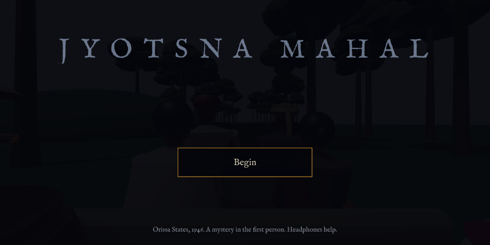
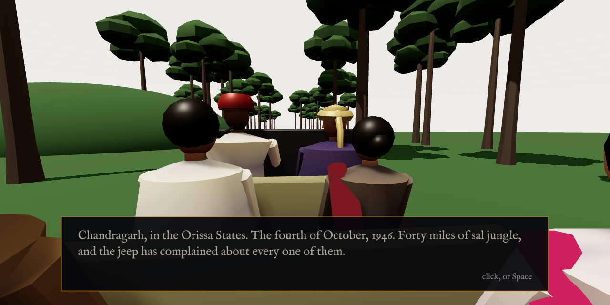
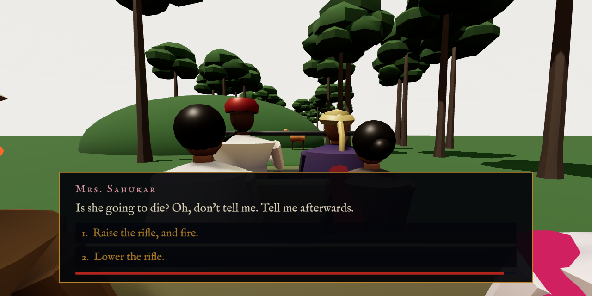
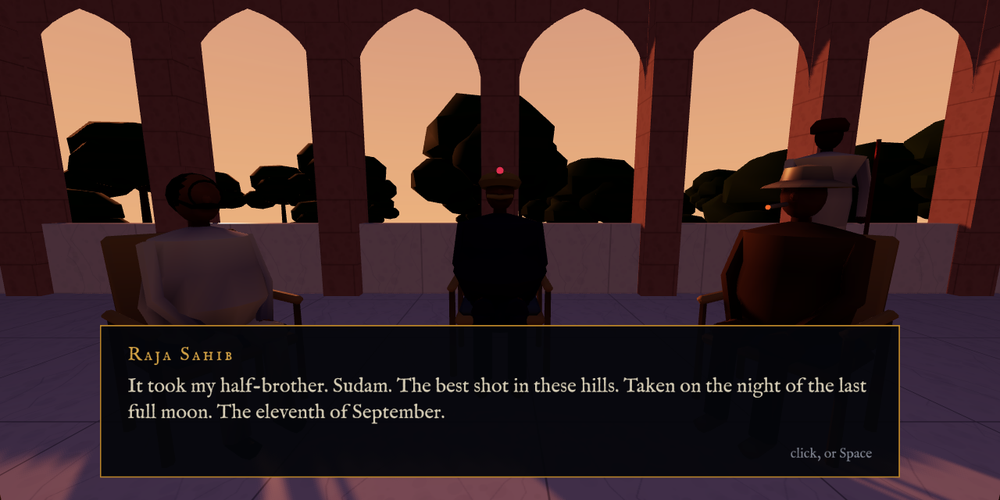
The night
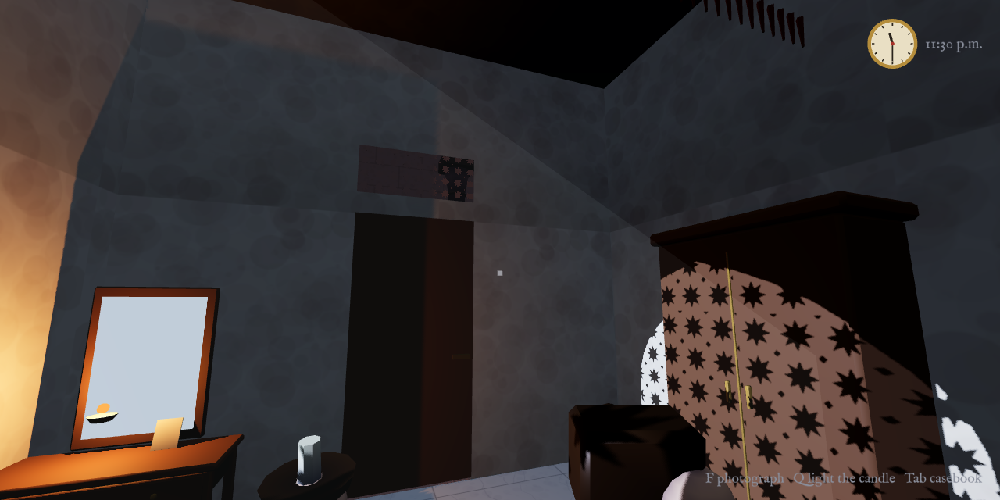
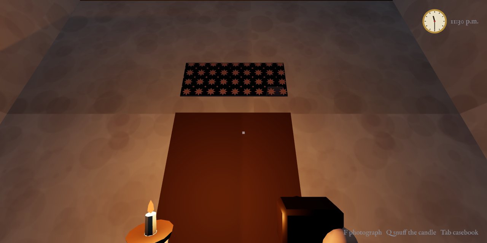
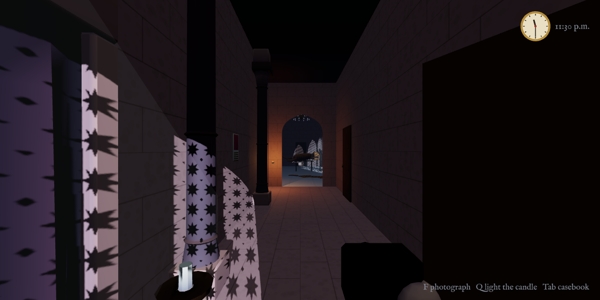
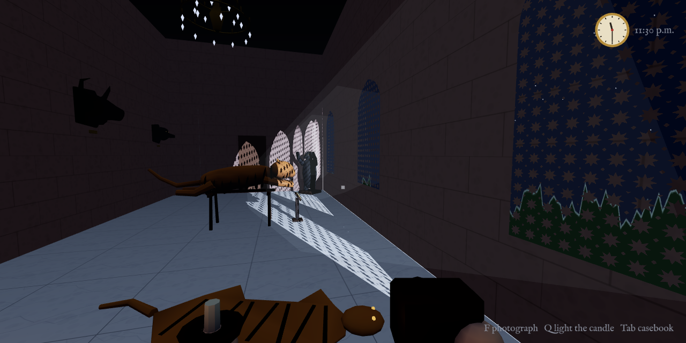
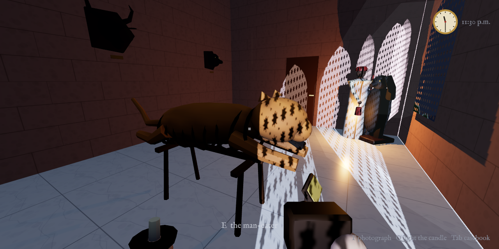
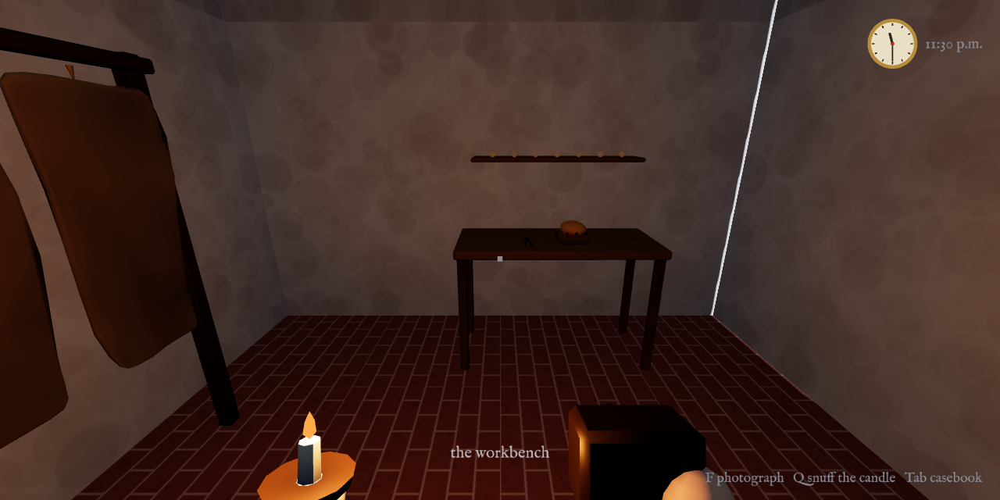
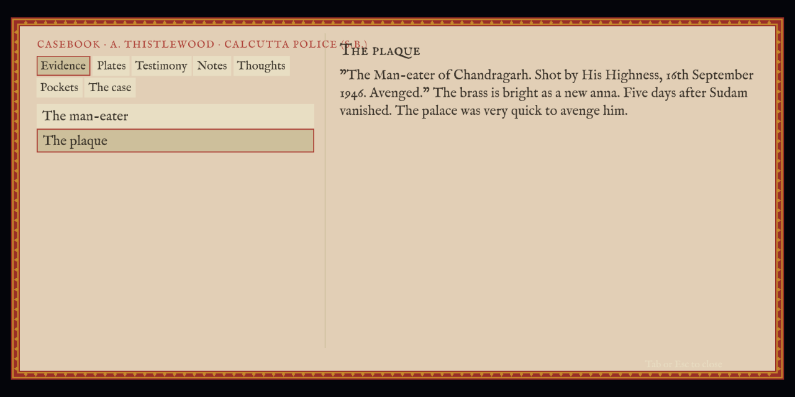
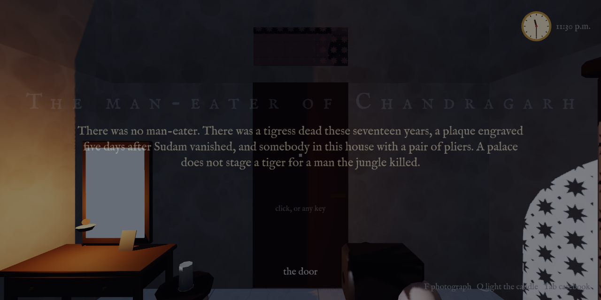
The solver, Night 1
Day 1 ends 18 distinct ways; Night 1 is solvable after every one of them, with no dead ends. critical path: 16 touches (17 when the Raja bolts the door twice) threads converging on the deduction: 4 [photo-man-eater] [new-plaque] [pulled-claws, taxidermy-book] [sudam-vanished (from the day)] states explored: 2190 (3278 bolted twice)
Try it
cd jyotsna-mahal && npm install npm run dev # the game npm run storybook # every room, puzzle state and conversation npm run sim # the solver's report